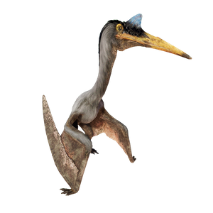

Useful Website
The piscivorous pterosaur Quetzalcoatlus dates back to the late Cretaceous period and is considered to be one of the largest flying animals the world has ever seen, with a wingspan in excess of 10m – roughly the size of a small aeroplane. The name Quetzalcoatlus stems from the Aztec god Quetzalcoatl, meaning ‘feathered serpent’.
